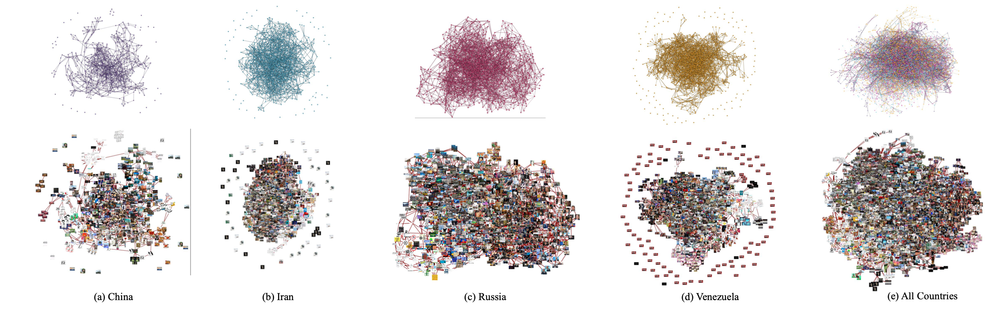
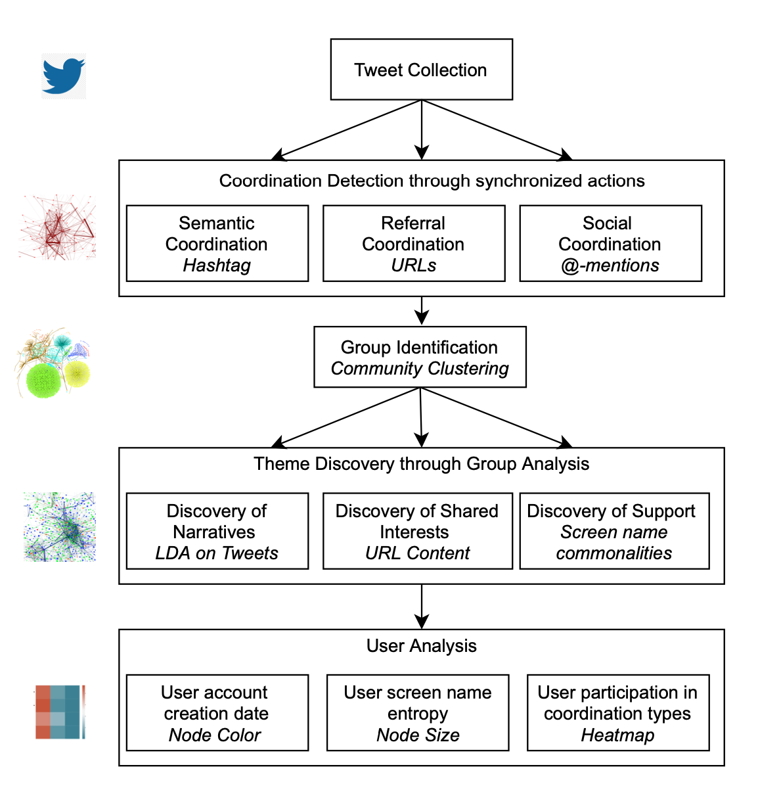
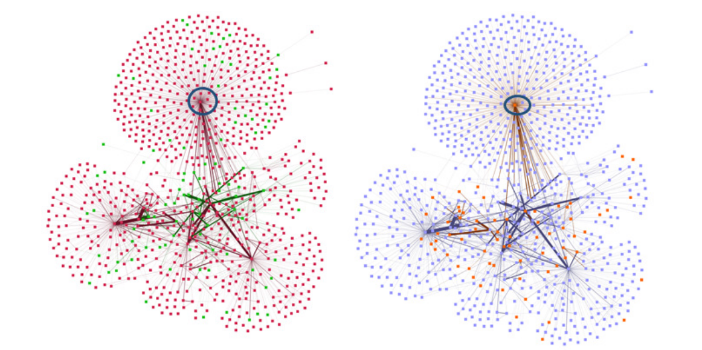

In this semester, I worked mostly on online coordination algorithms.
Here's some of the work that I've accomplished this semester.
Coordinated through a Web of Images: Analysis of Image-based Influence Operations from China, Iran, Russia, and Venezuela

I had a lot of fun on this one. I'm so grateful to my best friend, Janice Blane, for pushing me to do this, and JD. Moffit for jumping along with me.
In this, we developed a systematic methodology for analyzing co- ordinated image dissemination as part of an influence operation strategy. We analyze the use of images in influence operations in four countries and cross-country image coordination through image similarity networks.
We analyzed our results in terms of the known hierarchy and the funding structure of influence operation groups of each country. That's where I learnt a lot about the mechanics of the countries and had a lot of reading done.
Give it a read here and hopefully you'll learn more about the different influence operations of different countries.

In this observational piece, I applied the Synchronized Action Framework on four huge datasets. These datasets contain tweets during key events in the United States: US Elections Primaries, ReOpen America, Capitol Riots, COVID Vaccine Release.
A methodology for the discovery and analysis of coordinated groups through uncovering anomalously high levels of synchronized actions. This method is completely unsupervised, hence no labeled training data is required.
We use the methodology to detect different types of coordination: (i) semantic coordination based on hashtags, (ii) referral coordination based on URLs and (iii) social coordina- tion based on @-mentions.
I presented this work at a hybrid conference in Barcelona.
Here's the piece!

This piece holds a special meaning in my heart. It is the first thing I worked on since coming to Pittsburgh, for a class project which, for a while ``I have no project idea and everyone is at full steam ahead''. While this paper did take a few iterations of improvement to get accepted, after a year long, it is finally out! So, never give up! Just keep swimming!
In this work, we use data on stances towards the coronavirus vaccine on Twitter from April 2020 to May 2021. To predict stance changes, we propose a novel model of calculating user susceptibility to stance dynamics in the Twitter social network which integrates linguistic information from an agent's past tweets and interpersonal influence from an agent's network connection.
Our model performs pretty well on the dataset (86% accuracy). But the result I am most excited about is that agents that flip stances have significantly more neighbors engaging in a collective expression of the opposite stance, providing ideas that strong neighborhood expression can influence an agent's stance.
It is finally out here!